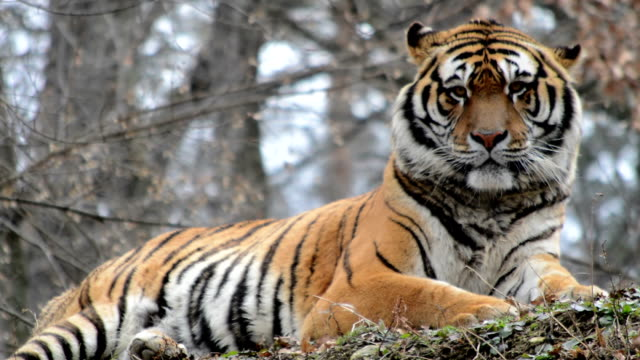
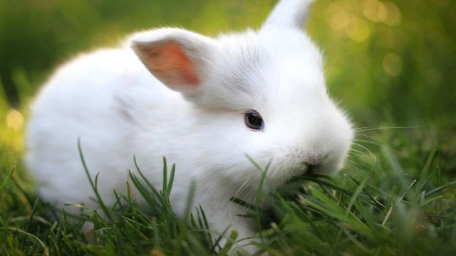
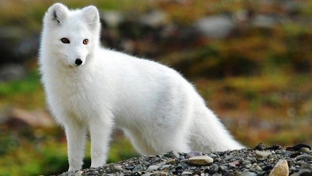
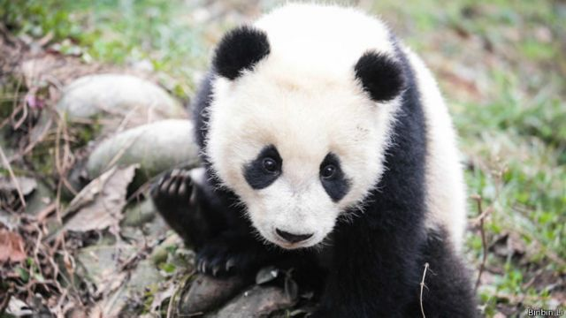

O tigre [feminino: tigresa] é um mamífero carnívoro da família dos felídeos, que habita o continente asiático. Dentre suas subespécies é o maior entre todos os felinos selvagens do mundo. São animais extremamente territoriais e solitários.
Mais tigres

Os coelhos são mamíferos lagomorfos da família dos leporídeos, em geral dos gêneros Oryctolagus e Sylvilagus. Caracterizam-se pela cauda curta, as orelhas e patas compridas. Esses pequenos mamíferos encontram-se facilmente em muitas regiões do planeta.
Mais coelhos

As raposas são animais mamíferos e onívoros pertencentes à família Canidae. São vulpídeos de porte médio, caracterizados por um focinho comprido e uma cauda longa e peluda. Também apresentam como particularidade suas pupilas ovais, semelhantes às pupilas verticais dos felídeos.
Mais raposas

O urso panda, também conhecido como panda-gigante, é o nome popular da espécie Ailuropoda melanoleuca, pertencente à classe Mammalia, ordem Carnivora e família Ursidae. Esses animais habitam as florestas de algumas regiões da China, medem cerca 1,5 m e pesam cerca de 100 kg.
Mais pandas